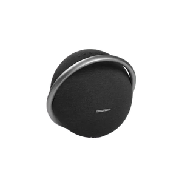
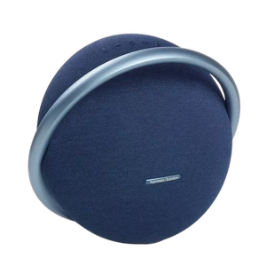
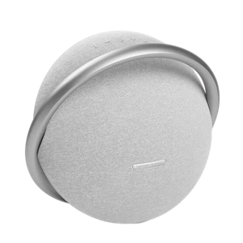

Speakers
JBL Onyx Studio 7
The JBL Onyx Studio 7 is a portable Bluetooth speaker that combines impressive audio quality with a sleek design. With a focus on both aesthetics and performance, it delivers a versatile listening experience. Whether indoors or outdoors, the Onyx Studio 7 is designed to make a statement.
Color